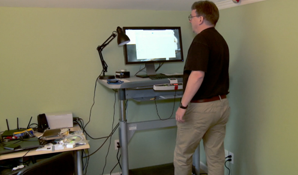

The Blessing Of Linus Torvalds
"I'm doing a free Operating System, Just a hobby won't be a big professional thing like GNU"
~Linus Torvalds
Present Day
96.3% of the world's servers use Linux to run.
"Software is like Sex, It's better when it's free"
~Linus Torvalds
The Corporate Accident
"Sometimes Opening the gates create better markets"
- Linux came into existence in the great UNIX wars.
- BSD was sued for using UNIX
- So, GNU was created.
- But the glue that should bind GNU and the Hardware was missing.
- Then Linux came into play.
Linux HQ must run on a super computer. Oh wait...

Richard Stallman
"The man Behind the Bull"
"Free software' is a matter of liberty, not price. To understand the concept, you should think of 'free' as in 'free speech,' not as in 'free beer'."
~Richard Stallman
The Bull Won't Ram Right?
Yes, It wouldn't.
- The GNU Project was created to replace UNIX and be free for all.
- But as luck had it the bull couldn't R.A.M.
- So, he took help from a black and white penguin.
- Created by Linus Torvalds in his mom's basement
- So, then began the great open source era.
- Where the bull Penguin Duo shook the entire OS corporates.
Why Linux is the best?
- Free & Open Source – No costly licenses, full control over the system.
- More Secure – Fewer viruses, better user permissions, and strong security features.
- Lightweight & Efficient – Runs smoothly on older hardware, unlike Windows.
- Better Privacy – No forced telemetry or data collection like Windows.
- Highly Customizable – Choose from multiple desktop environments, themes, and configurations.
- Great for Developers – Comes with built-in programming tools and better command-line utilities.
- Strong Community Support – Helpful forums, wikis, and open-source contributions.
Windows? EWWWWWWWWW